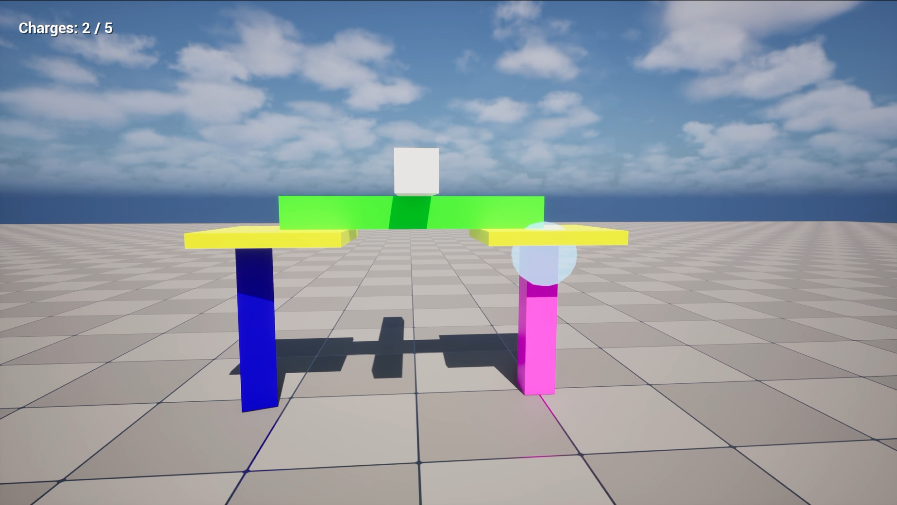
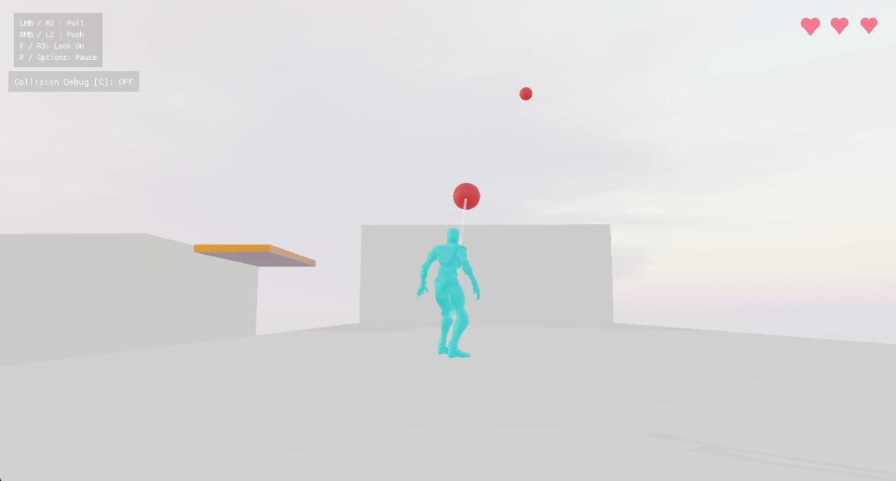
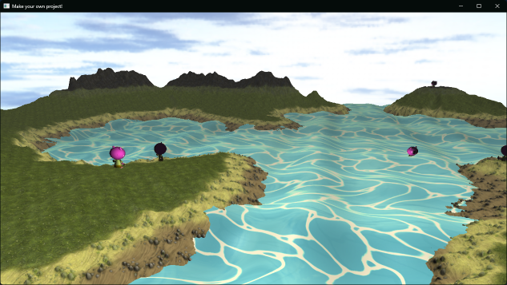
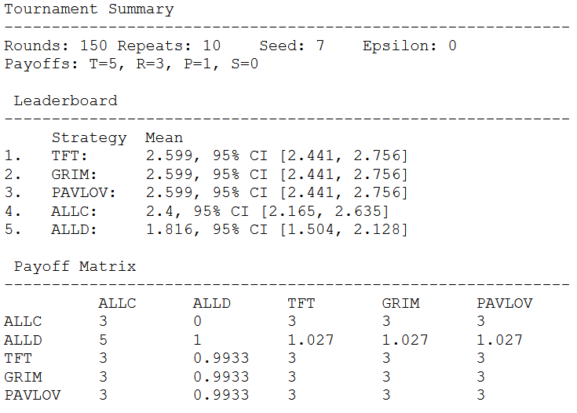

Projects

Graph-Based Real-Time Destruction
Unreal | C++
Graph-based structural models comparison for real-time game destruction.

Push-Pull
Jolt | FMOD | C++
Team-developed game with force-based mechanics.

Real-Time Graphics Project
OpenGL | GLSL | C++
Graphics demo exploring lighting, animation and shader techniques.

Iterated Prisoner's Dilemma
CLI | C++
Configurable tournament and evolutionary simulation framework.